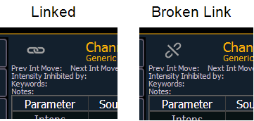
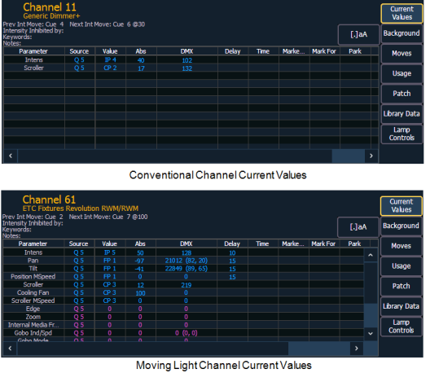

[About] provides detailed information regarding selected elements.
Pressing [About] puts the console in about mode, which allows you to examine about information indefinitely, simply by selecting the element you are interested in. When opened, it appears in the CIA and remains open until closed or until another action forces it to close.
You can also open an About display in a tab by using [Tab] [2][9].
Press the Link icon to break the link to the command line for the current About display. When the link is broken, the About display will be forced to keep showing the type of information currently being displayed, such as channel, address, or presets. When linked, the About display will be linked to the command line, and will updated based on which target is selected.

Press {.a[A]} to zoom. There are three zoom sizes: small, medium, & large. Medium is the default size.
When in about mode, selecting a channel will reveal information about that channel. Below are examples of the Current Values view (see below) of information that is presented when selecting conventional or moving lights. For more information about the About Channel display, see [About] Channel
